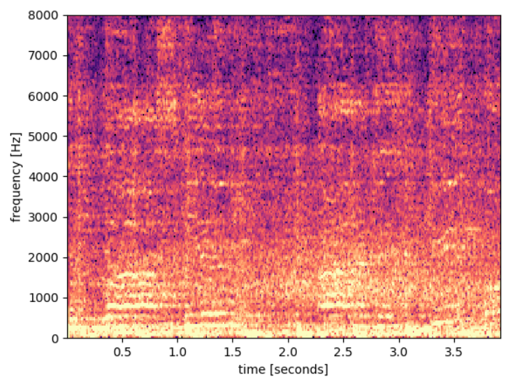
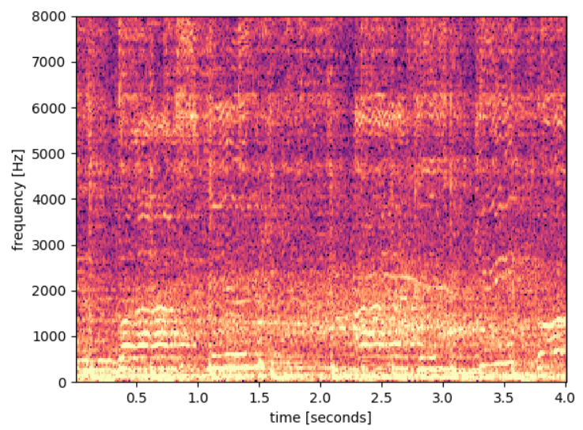
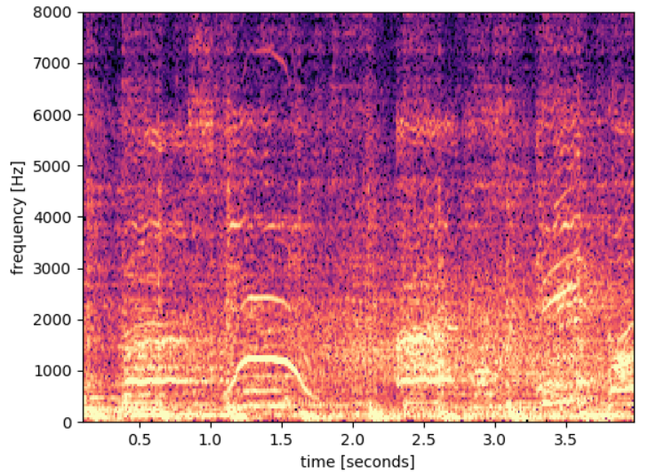
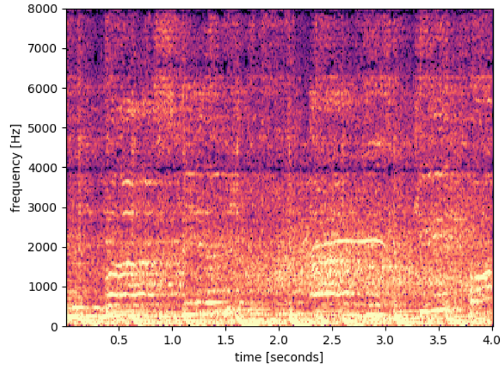
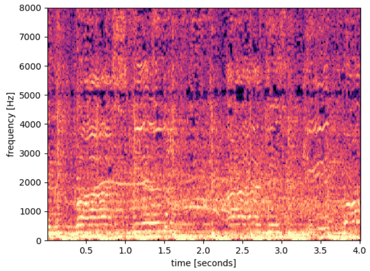
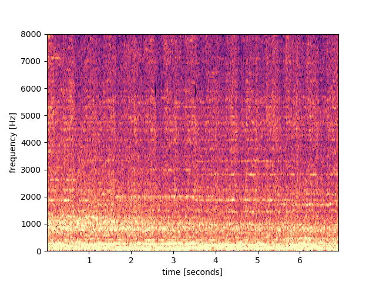
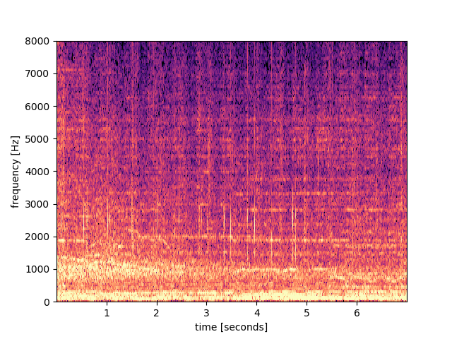
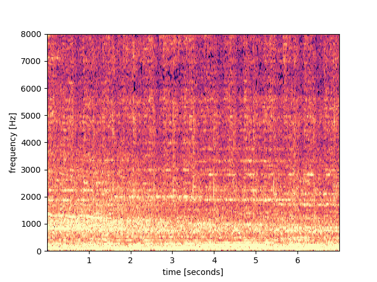
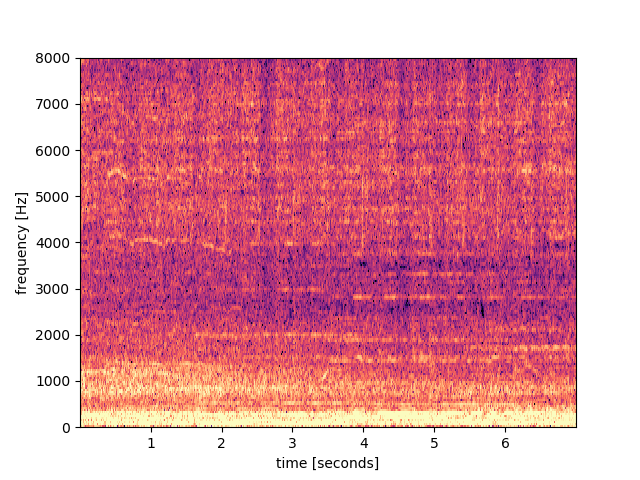
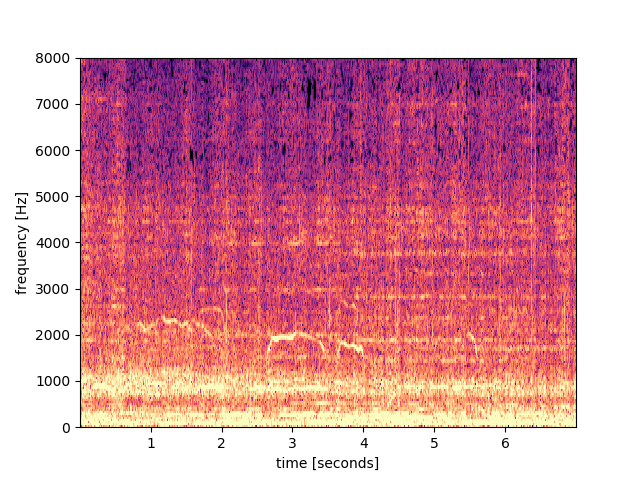

The audio tracks from the synced video clips are fed into our algorithm, that produces an enhanced audio (1st column).
All Youtube clips are with different YoutubeID.
Example Ⅰ
Real world data, Harry Styles concert.
our crowdsourced enhancement result
video (1)
video (2)
video (3)
video (4)





Note the clear scream pattern in the spectrogram of video (2) at 1.5 seconds, that is not present in the enhanced result.
Example Ⅱ
Real world data, Coldplay concert.
our crowdsourced enhancement result
video (1)
video (2)
video (3)
video (4)





In the enhanced audio the applause heared in videos (1) and (2) are significantly reduced, and the scream from video (4) is absent.
Example Ⅲ
Real world data, Harry Styles concert (2).
our crowdsourced enhancement result
video (1)
video (2)
video (3)
video (4)
video (5)
video (6)
video (7)
video (8)
video (9)
Example Ⅳ
Synthetic data, speech + noises (both sampled from LibriSpeech), SNR=-3dB.